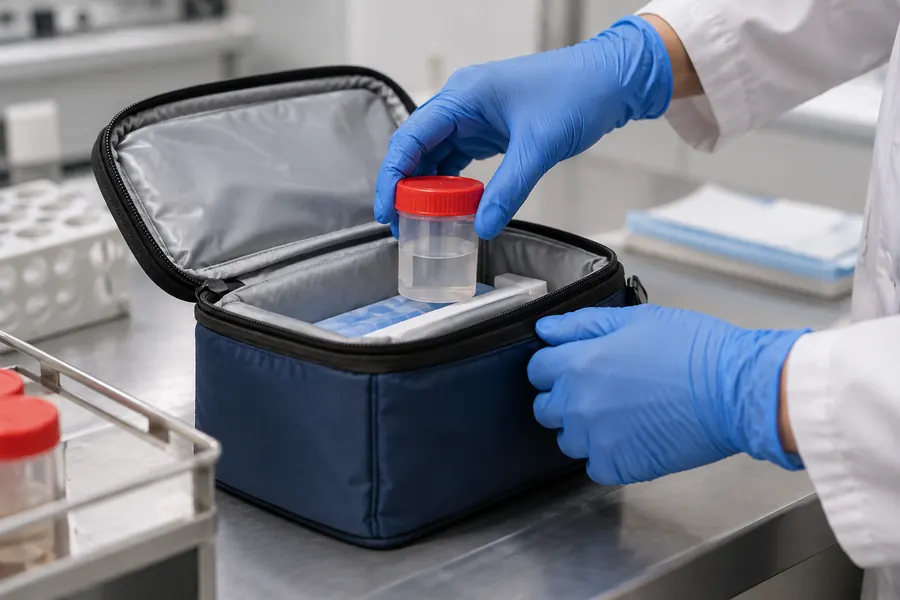

현재 확인
주간 점검에서 상담 전에 남길 생활 메모를 살피며 한 번에 결론을 내리기보다 주간 점검 기록으로 현재 상태를 기록해 다음 확인으로 이어 갑니다.
주간 점검 기록으로 상담 전에 남길 생활 메모에 관해 현재 상황과 기대하는 변화를 함께 정리합니다.
주간 점검에서 상담 전에 남길 생활 메모를 살피며 한 번에 결론을 내리기보다 주간 점검 기록으로 현재 상태를 기록해 다음 확인으로 이어 갑니다.
주간 점검에 상담 전에 남길 생활 메모에 필요한 질문으로 주간 점검에 맞는 준비와 담당자 상담 전에 확인할 사항을 함께 비교해 봅니다.
주간 점검 뒤에 상담 전에 남길 생활 메모를 정리한 뒤 상담 후에는 안내받은 내용을 생활 속에서 적용해 보고 달라진 점을 기록하면 다음 대화가 더 구체적으로 이어집니다.
주간 점검에서는 상담 전에 남길 생활 메모를 중심으로 한 번에 결론을 내리기보다 주간 점검 기록으로 현재 상태를 기록해 다음 확인으로 이어 갑니다. 주간 점검에 맞는 준비와 담당자 상담 전에 확인할 사항을 함께 비교해 봅니다. 주간 점검에서 상담 전에 남길 생활 메모의 확인 순서를 기록합니다.
주간 점검에 남은 질문은 상담 전에 남길 생활 메모에 맞춰 메모해 두었다가 본인의 생활과 상담에서 확인할 내용을 준비해 주세요.
온라인 상담 시작의료진의 진료 분야와 상담 주제를 먼저 확인합니다. 현재 고민과 맞닿은 내용을 메모하면 첫 대화가 구체적으로 시작됩니다.
학술 활동과 방송 자료는 경력을 이해하는 참고 자료입니다. 개인의 결과나 적합성을 보장하는 문장으로 해석하지 않습니다.
진료 전에 과거 치료와 복용 약, 알레르기, 생활상의 제약을 정리합니다. 필요한 기록은 안전하게 준비합니다.
상담에서 설명받은 방법과 주의점을 본인의 일정에 맞춰 다시 확인합니다. 질문이 남으면 다음 점검 시점도 함께 정합니다.
의료진의 안내와 몸의 변화를 기록해 지속적인 대화로 이어 갑니다. 갑작스러운 증상은 지체하지 않고 문의합니다.
진료 분야를 확인하고 자신의 질문을 주제별로 나눕니다.
이력의 날짜와 활동 내용을 구분해 읽습니다.
학술 발표는 연구 주제와 대상 범위를 함께 봅니다.
방송 자료는 일반적인 설명으로 활용합니다.
개인에게 같은 결과가 나타난다고 단정하지 않습니다.
현재의 불편한 변화를 날짜와 함께 적습니다.
이전 관리와 검사 결과를 시간 순서로 정리합니다.
복용 약과 알레르기 정보를 빠뜨리지 않습니다.
원하는 변화와 걱정되는 점을 나눠 기록합니다.
상담에서 들은 선택지를 서로 비교합니다.
준비 과정과 예상 시간을 확인합니다.
회복 중 주의할 움직임을 메모합니다.
연락이 필요한 증상의 기준을 질문합니다.
진료 뒤 관찰할 항목을 정합니다.
변화가 생긴 날과 정도를 기록합니다.
사진은 같은 조건에서 참고용으로 남깁니다.
안내와 다른 증상이면 임의로 판단하지 않습니다.
생활 일정에 맞는 다음 점검일을 정합니다.
가족이나 동행자에게 필요한 내용을 공유합니다.
상담 기록은 안전하게 보관합니다.
새로운 질문은 다음 방문 전에 추가합니다.
결정하기 전 충분한 설명을 요청합니다.
효과와 한계를 함께 확인합니다.
장기적인 생활 관리 계획도 상담에서 다룹니다.
의료진의 진료 분야와 현재 나의 고민이 어디에서 만나는지 먼저 적어 봅니다. 상담의 목적을 한 문장으로 정리하면 필요한 설명을 놓치지 않기 쉽습니다.
학술 발표와 연구 활동은 의료진의 관심 분야를 이해하는 참고 자료입니다. 발표 제목만으로 개인에게 같은 결과가 나타난다고 판단하지 않고 적용 범위와 한계를 함께 질문합니다.
방송이나 영상 자료에서 소개된 사례는 일반적인 설명으로 읽습니다. 나이와 생활 조건, 과거 치료가 다르면 계획도 달라질 수 있다는 점을 상담 전에 기억합니다.
진료 전에 복용 중인 약과 알레르기, 이전에 받은 시술과 수술을 시간 순서로 정리합니다. 기록이 정확하지 않아도 기억나는 범위와 확인이 필요한 부분을 표시해 의료진에게 알립니다.
최근의 불편함이 시작된 날짜와 달라진 식사, 수면, 활동량을 함께 기록합니다. 증상이 나타나는 상황과 쉬면 달라지는지도 적어 두면 상태를 설명하기 수월합니다.
원하는 변화와 피하고 싶은 결과를 따로 적습니다. 기대하는 기간을 함께 말하면 가능한 선택지와 현실적인 회복 계획을 비교하는 데 도움이 됩니다.
상담에서 제시된 방법은 준비, 진행, 회복의 세 단계로 나누어 메모합니다. 각 단계에서 본인이 해야 할 일과 의료진에게 확인할 일을 구분해 둡니다.
필요한 검사와 확인 절차가 있다면 언제 어디서 진행하는지 물어봅니다. 결과를 기다리는 기간과 다음 상담의 순서도 일정에 맞춰 기록합니다.
회복 기간에는 업무와 운동을 어느 정도 조정해야 하는지 확인합니다. 이동이 많거나 돌봄이 필요한 일정이 있다면 상담에서 미리 설명하고 계획을 조정합니다.
관리 뒤 나타날 수 있는 일반적인 변화와 즉시 연락해야 하는 신호를 구분해 듣습니다. 모호한 표현은 본인의 말로 다시 설명해 달라고 요청합니다.
안내받은 관찰 항목은 날짜와 정도를 함께 기록합니다. 붉어짐이나 당김처럼 주관적인 느낌도 반복되는지 적으면 다음 점검에서 참고할 수 있습니다.
사진을 남길 때는 같은 조명과 각도를 유지합니다. 사진은 경과를 함께 보기 위한 자료이며 의료진의 진료나 판단을 대신하지 않는다는 점을 기억합니다.
상담 뒤 새로 생긴 질문은 바로 잊지 않도록 메모장에 추가합니다. 다음 방문 전에 질문을 주제별로 정리하면 짧은 시간에도 중요한 내용을 우선 확인할 수 있습니다.
생활 속에서 바꾸기로 한 습관은 한 번에 하나씩 실천합니다. 식사와 수면, 활동의 변화를 기록하면 관리가 현재 상태에 어떤 영향을 주는지 대화하기 좋습니다.
의료진의 설명과 온라인에서 본 정보가 다를 때는 출처와 날짜를 함께 보여 줍니다. 서로 다른 정보를 섞어 임의로 계획하지 말고 본인의 상태에 맞는 기준을 확인합니다.
진료 결과를 다른 사람의 사례와 비교해 결론 내리지 않습니다. 체질과 생활, 회복 속도가 다르므로 자신에게 적용되는 설명을 중심으로 판단합니다.
진료 기록과 검사 결과는 필요한 사람이 안전하게 확인할 수 있도록 보관합니다. 가족이나 동행자가 함께 관리한다면 공유 범위와 연락 방법을 미리 정합니다.
다음 점검일은 달력에 표시하고 그 전까지 관찰할 내용을 적습니다. 예약 변경이 필요하면 증상이 심해질 때까지 기다리지 않고 안내된 창구에 연락합니다.
계획을 바꾸고 싶을 때는 먼저 현재 상태와 이유를 의료진에게 설명합니다. 복용 약이나 관리 방법을 스스로 중단하거나 추가하지 않고 안전한 대안을 문의합니다.
효과에 대한 설명은 기대할 수 있는 변화와 확인에 필요한 시간을 나누어 듣습니다. 단기간의 느낌만으로 성공이나 실패를 판단하지 않고 정해진 점검을 이어 갑니다.
위험과 불편에 대한 설명도 같은 비중으로 확인합니다. 이해한 내용을 자신의 말로 다시 말해 보고 빠진 부분이 있으면 바로 질문합니다.
상담 전에 동행자와 역할을 정하면 기록과 일정 확인을 나누어 할 수 있습니다. 다만 최종 결정은 본인의 이해와 동의를 바탕으로 진행합니다.
장기적인 생활 관리가 필요한 경우 실천 가능한 목표를 작게 정합니다. 목표를 지키지 못한 날도 기록에 남기면 다음 상담에서 계획을 현실적으로 조정할 수 있습니다.
의료진 페이지의 정보는 상담을 준비하기 위한 출발점입니다. 현재 몸의 상태와 개인적인 목표를 충분히 설명하고 자신에게 맞는 다음 단계를 차분히 확인합니다.
주간 점검의 메모를 기준으로 현재 생활 리듬과 다음 확인 순서를 상담에서 함께 살펴봅니다.
주간 점검에서 상담 안내를 다음 상담의 메모로 이어 갑니다.
